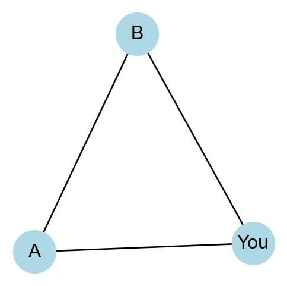
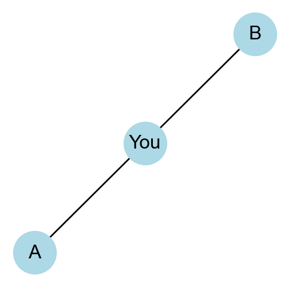

It’s all well and good to study the theoretical properties of hypothetical networks. In this set of notes, we’ll start addressing an important empirical question:
What are real networks like?
Of course, there’s no simple answer to this question: we observe network data sets across a wide variety of domains, and many of them have different properties. For our purposes today, we’ll look at a sample of four networks:
twitch: A network of mutual friends on the Twitch streaming platform. The data set was collected by Rozemberczki, Allen, and Sarkar (2021).
chameleon: A network of Wikipedia pages on topics related to chameleons (yes, the animal). An edge exists between two nodes if the corresponding Wikipedia pages link to each other. The data set was collected by Rozemberczki, Allen, and Sarkar (2021).
karate: The Zachary Karate Club social network (Zachary 1977), which is packaged with NetworkX.
les_mis: A network of character interactions in the novel Les Miserables by Victor Hugo, also packaged with NetworkX.
Show code
from matplotlib import pyplot as pltimport networkx as nxplt.style.use('seaborn-v0_8-whitegrid')import numpy as npfrom scipy.special import factorialimport pandas as pdimport random# acquire twitch dataurl ="https://raw.githubusercontent.com/benedekrozemberczki/MUSAE/master/input/edges/ZHTW_edges.csv"edges = pd.read_csv(url)G_twitch = nx.from_pandas_edgelist(edges, "from", "to", create_using=nx.Graph)# acquire chameleon dataurl ="https://raw.githubusercontent.com/benedekrozemberczki/MUSAE/master/input/edges/chameleon_edges.csv"edges = pd.read_csv(url)G_chameleon = nx.from_pandas_edgelist(edges, "id1", "id2", create_using=nx.Graph)# two built-in networkx data sets. G_karate = nx.karate_club_graph()G_les_mis = nx.les_miserables_graph()
A fundamental principle in measuring networks is to compare. If we say that a network has a high value of some measurement \(X\), then the correct reply is:
High compared to what?
There are many reasonable answers to this question, and we’ll explore several of them when we come to the study of random graphs. For now, we are going to compare each of our real networks to a synthetic random graph with a similar degree sequence.
Technically, we are using a model that reproduces the degree sequence approximately and in expectation. This model is due to Chung and Lu (2002).
The following code constructs a random synthetic counterpart graph for each of our empirical graphs. It then adds all of these to a dictionary so that we can easily access both the real and synthetic graphs later.
To help us compute and compare measurements on these graphs, we’ll define the following function which will manage these computations and organize the result as a table. This function takes as an argument a function fun which accepts a graph as an input and returns a scalar value.
def compute_metric(fun =lambda x: 0, compare =True):print("Data Set"+" "*10+"Real", end ="")if compare: print(" "*10+"Random")else: print()print("-"*22, end ="")if compare: print("-"*18)else: print()for data_set in dataset_dict:print(data_set +" "* (14-len(data_set)) +f"{fun(dataset_dict[data_set]['graph']):>8.2f}", end ="")if compare:print(" "* (8) +f"{fun(dataset_dict[data_set]['random']):>8.2f}")else: print()
Node and Edge Counts
Let’s start with something simple: how many nodes and edges are in each graph?
print("Number of nodes")compute_metric(lambda x: x.number_of_nodes())print("\nNumber of edges")compute_metric(lambda x: x.number_of_edges())
Number of nodes
Data Set Real Random
----------------------------------------
twitch 2772.00 2772.00
chameleon 2277.00 2277.00
karate 34.00 34.00
les_mis 77.00 77.00
Number of edges
Data Set Real Random
----------------------------------------
twitch 63462.00 61818.00
chameleon 31421.00 31048.00
karate 78.00 65.00
les_mis 254.00 221.00
Although the number of nodes agree exactly in the real and random networks, there are some small discrepancies in the edge counts. This is due to the fact that our procedure for constructing random graphs (a) only preserves the degrees in expectation rather than exactly and (b) can create some self-loops, which get discarded.
Clustering Coefficient
Let’s move on to something more complex. Take a moment and think of two of your friends, whom we’ll call \(A\) and \(B\). Are \(A\) and \(B\) themselves friends with each other? If they do, then we say that there is a triad or triangle in the network.

A triangle in a social network
A stylized fact about many networks—especially social networks—is that triangles like these are common. In order to validate this stylized fact, we need to (a) determine how to measure the prevalence of triangles and (b) compare the value of this measure on our real networks to that of their random counterparts.
There are many possible measures of the prevalence of triangles, but here we will use the transitivity: the fraction of all possible triangles that are present in the network. The formula for transitivity is
Here, \(\mathbf{A}\) is the adjacency matrix of \(G\) and \(k_i\) is the degree of node \(i\).
The numerator of this expression is proportional to the number of triangles in the network (technically, it is off by a factor of 6) and the denominator is proportional to the number of paths of length two in the network. You can think of a triplet as a possible triangle: just add one more edge and a triangle forms. bn

A triplet in a social network centered on you
Let’s write a function to compute the transitivity of a graph.
def my_transitivity(G): A = nx.adjacency_matrix(G).toarray()# A = 1*(A >= 1) # convert to unweighted form# numerator num_triangles = np.trace(A @ A @ A)# denominator degrees = A.sum(axis =0) num_triplets = np.sum(degrees * (degrees -1))return num_triangles / num_triplets
Let’s compare our function to the built-in function supplied by NetworkX.
Looks good! We’ll move forward with the NetworkX version, as it is substantially faster on larger graphs.
compute_metric(nx.transitivity)
Data Set Real Random
----------------------------------------
twitch 0.12 0.15
chameleon 0.31 0.12
karate 0.26 0.22
les_mis 0.50 0.24
We observe that the chameleon and les_mis graphs appear to have substantially greater transitivity than their random counterparts, while both karate and twitch have similar transitivity to their random counterparts. Under this comparison, some networks indeed display very high transitivity.
Connected Components
What about the number of connected components in the network?
Data Set Real Random
----------------------------------------
twitch 1.00 63.00
chameleon 1.00 65.00
karate 1.00 3.00
les_mis 1.00 10.00
Recall that we’ve engineered all of our real networks to have only one connected component, filtering if necessary. On the other hand, the random networks tend to have multiple connected components.
Would it be fair to say that real networks are more connected than would be expected at random? Some caution is required here. Many researchers collect network data using methods that are especially likely to produce connected networks. For example, snowball sampling in study design refers to the method of recruiting participants for a survey or other instrument by asking people to recommend their friends. Since they can’t recommend people they don’t know, the snowball sample collected from an individual is always connected. Similarly, data sets like the chameleon data set are constructed by following links from one Wikipedia page to another. This method always produces a connected network as well. So, while it is true that many network data sets contain a single connected component, this is often an artifact of data collection rather than a fundamental property of the network.
Degree-Degree Correlations
We have constructed random counterpart networks that have similar degree sequences to the real networks we are studying. Networks, however, can have interesting degree structures beyond just the degree sequence. One such structure is the degree-assortativity. The degree assortativity measures the extent to which nodes of similar degree are connected to each other. There are several ways to measure degree assortativity, but the most common one (due to Newman (2018)) has formula
If you are familiar with probability and statistics, this formula is equivalent to \(C = \frac{\mathrm{cov}(K_1,K_2)}{\sqrt{\mathrm{var}(K_1)\mathrm{var}(K_2)}}\), where \(K_1\) and \(K_2\) are the degrees of the nodes at the ends of an edge selected uniformly at random from \(G\). This is also the Pearson correlation coefficient between \(K_1\) and \(K_2\).
An assortative network (with high assortativity) is one in which nodes of high degree tend to connect to each other frequently. A disassortative network (with negative assortativity) is one in which nodes of high degree tend to connect to nodes of low degree. Let’s take a look at the assortativity values in our networks:
Data Set Real Random
----------------------------------------
twitch -0.23 -0.10
chameleon -0.20 -0.06
karate -0.48 -0.16
les_mis -0.17 -0.10
It looks like all of our networks are disassortative, and somewhat moreso than their random counterparts. Disassortativity is a common feature of many networks, and it is often attributed to the presence of hubs in the network. Hubs are nodes with very high degree, and they tend to connect to many other nodes. Since there are only a few hubs, they are more likely to connect to nodes of low degree than to other hubs.
Shortest Path Lengths
In a famous study, Stanley Milgram (1967)1 asked participants to ensure that a letter reached a target person, whom they did not know, in a US city. However, the participants were only allowed to send the letter to someone they knew on a first-name basis. That person could then send the letter to another person they knew on a first-name basis, and so on, until the letter was delivered (or lost). Perhaps surprisingly, many participants were able to reach the target person in only a few steps, on average. This experiment is the origin of the famous phrase six degrees of separation: in many social networks, most individuals are separated by relatively few links, even when the network is very large.
To test this in our networks, we’ll compute the length of the shortest path between a pair of nodes, averaged across all possible pairs. This quantity isn’t defined for the random counterpart networks that have multiple disconnected components (why?), and so we’ll stick to calculating it on the real-world networks.
Data Set Real
----------------------
twitch 2.43
chameleon 3.56
karate 2.41
les_mis 2.64
Indeed, despite some of these networks having thousands of nodes and edges, the average shortest path length does not exceed 4 links. We’ll consider some theoretical models that aim to explain this phenomenon later in the course.
References
Chung, Fan, and Linyuan Lu. 2002. “Connected Components in Random Graphs with Given Expected Degree Sequences.”Annals of Combinatorics 6 (2): 125–45.
Milgram, Stanley. 1963. “Behavioral Study of Obedience.”The Journal of Abnormal and Social Psychology 67 (4): 371.
———. 1967. “The Small World Problem.”Psychology Today 2 (1): 60–67.
Newman, Mark. 2018. Networks. Oxford University Press.
Rozemberczki, Benedek, Carl Allen, and Rik Sarkar. 2021. “Multi-Scale Attributed Node Embedding.”Journal of Complex Networks 9 (2).
Zachary, Wayne W. 1977. “An Information Flow Model for Conflict and Fission in Small Groups.”Journal of Anthropological Research 33 (4): 452–73.